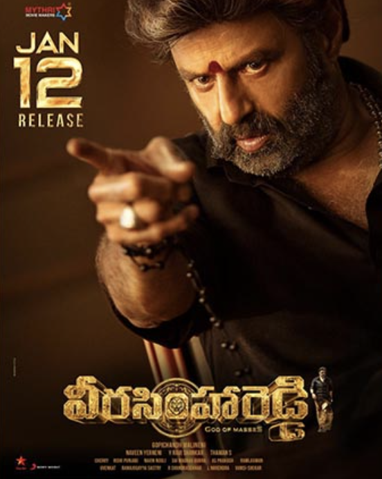

Veera Simha Reddy Review: Jai Balayya!

Rating:⭐⭐1/2
Ah yes, a Balayya movie. What can we expect? Overloaded mass sequences? Age gap differences? Funny
dialogues? Terrible music but a strong BGM? All these questions is what you expect in this film
First of all, the dude is 61, why the fuck is the mom character only 31? I will say the fight sequences
were pretty good, (well some being of course illogical, but its a Balayya film). BGM was awesome, but Thaman's
music, was disappointing, big time. I think he was more focused in making music for Varisu, that he forgot about
this. Other than that, there is really nothing much to say about JAIIIII BALAYYA JAIII BALAYYA!